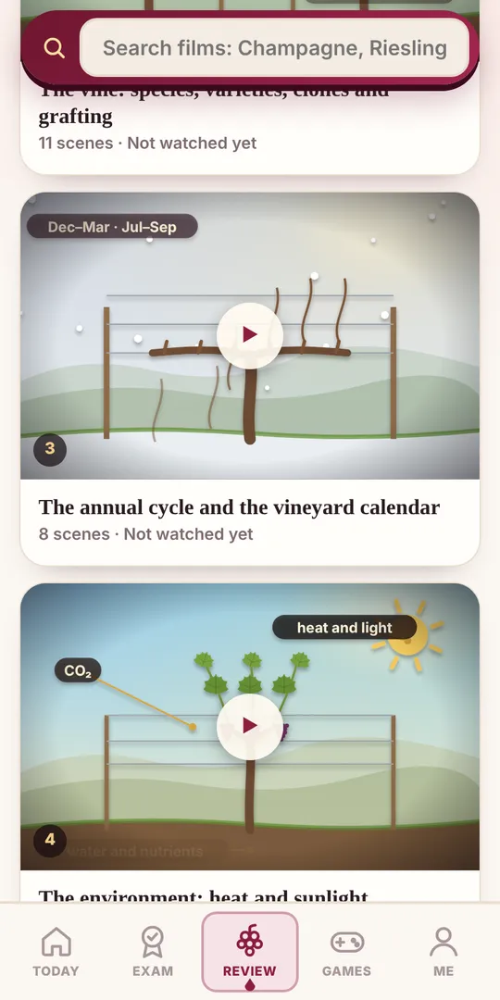
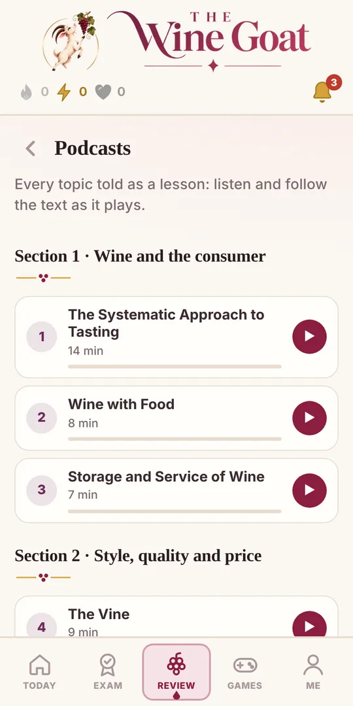
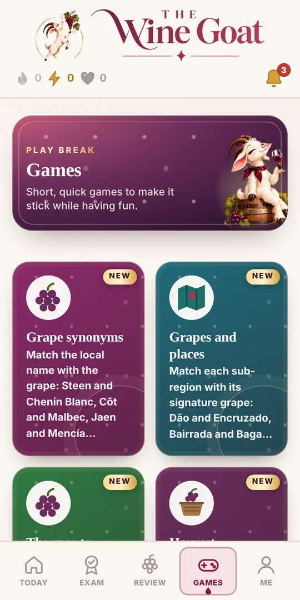
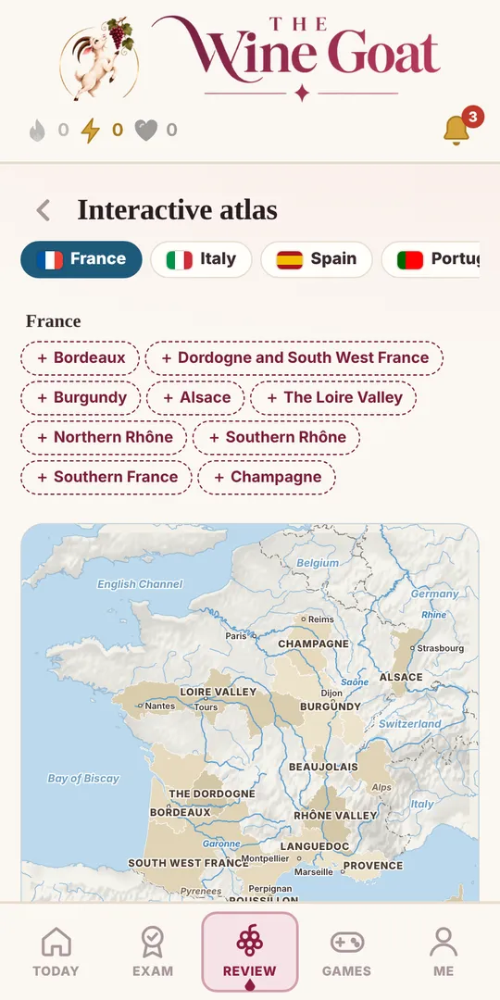
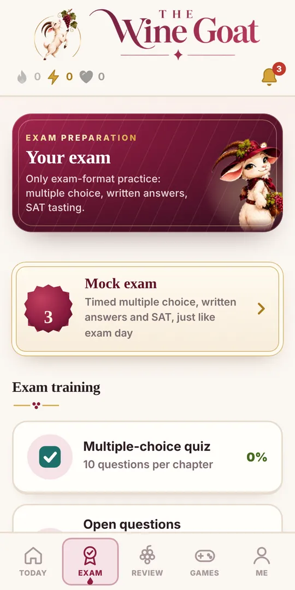
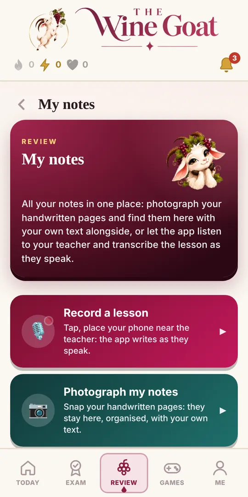

Burdeos
El módulo de prueba: completo y gratuito.
Gratis
Abrir gratisPreparación del examen WSET® Nivel 3 · Award in Wines
Test WSET 3, preguntas de respuesta corta con corrección inmediata, cata con el método SAT, simulacros de examen y todas las trampas que debes evitar. Estés donde estés. Una app personalizada: te crea el plan de estudio hasta el examen, te dice qué hacer cada día y te ayuda a cubrir tus carencias.

Pregunta relámpago · Burdeos
Más preguntas gratis ↓No solo test: ejercicios de todo tipo, juegos, películas animadas, pódcasts, mapas y herramientas para tus apuntes. Toca una casilla para probarla.

Test, preguntas abiertas con corrección, mapas y juegos sobre Burdeos: todo el módulo está abierto, sin tarjeta. Prueba el método con una de las regiones más importantes del examen.
Ejercicios reales, directamente en esta página. Elige uno y juega: en la app hay miles.
En la app, el módulo de Burdeos es gratis y completo: test, preguntas abiertas con corrección y repaso de tus errores.
Guardar mis resultados y crear mi planToca un nombre local y luego la uva que le corresponde.
Afirmaciones que confunden a muchos candidatos.
Toca la tarjeta para darle la vuelta.

En el examen WSET 3, las preguntas abiertas valen la mitad de la teoría. Responde mentalmente y luego mira los elementos que dan puntos.
El vino B lleva un tapón de corcho natural. ¿Qué condiciones de conservación recomendarías para guardarlo a largo plazo? (5 puntos)
Cada tema se convierte en una película corta animada y narrada: la poda, la vinificación, las regiones con sus mapas. Al final: las palabras clave y un test.
▶ Ver las películas en la app
Escucha un episodio real. En la app tienes los 45 capítulos, con el texto que avanza mientras escuchas.

Dos herramientas que ningún libro te da.
Fotografía las páginas escritas a mano: se quedan en la app, en tu dispositivo, junto a tu texto.
La app escucha al profesor y transcribe mientras habla.
Pantallas reales, tal como las verás en tu móvil.





Los demás recursos para preparar el WSET 3 cubren solo una parte. Aquí lo tienes todo, en tu idioma.
| The Wine Goat | Apps de test | Exámenes de prueba en PDF | Libro y apuntes | |
|---|---|---|---|---|
| Preguntas tipo test | ✓ más de 2.000 | ✓ | ✓ | — |
| Corrección de las respuestas escritas | ✓ inmediata | — | por tu cuenta | — |
| Películas animadas y pódcasts | ✓ 68 películas · 45 pódcasts | — | — | — |
| Juegos para memorizar | ✓ 11 juegos | a veces | — | — |
| Mapas interactivos | ✓ 42 mapas | — | — | en papel |
| Apuntes en clase y fotos | ✓ | — | — | a mano |
| Idiomas | ES · IT · FR · EN | normalmente solo inglés | inglés | — |
| Para empezar | Burdeos gratis | de pago | de pago | — |
Sin suscripciones: desbloqueas un módulo con un pago único y es tuyo durante 12 meses. Burdeos es gratis para todos.
El módulo de prueba: completo y gratuito.
Gratis
Abrir gratisMétodo SAT, maridajes, conservación y servicio.
9 € pago único
DesbloquearClima, entorno, gestión del viñedo y poda.
9 € pago único
DesbloquearVinificación de blancos, tintos y rosados, crianza, precio.
9 € pago único
DesbloquearBorgoña, Beaujolais, Alsacia, Loira, Ródano, Sur.
9 € pago único
DesbloquearItalia, España, Portugal, Alemania, Austria, Hungría, Grecia.
12 € pago único
DesbloquearEE. UU., Canadá, Chile, Argentina, Sudáfrica, Australia, Nueva Zelanda.
9 € pago único
DesbloquearChampagne, Prosecco, Cava, Jerez, Oporto y vinos dulces.
9 € pago único
DesbloquearSimulacros de examen completos, lógica de examen y trampas.
12 € pago único
DesbloquearTodo el Nivel 3, todas las herramientas, 12 meses.
78 € 59 € Ahorras 19 €
Precios con IVA incluido. ¿Ya tienes algún módulo? Al pasar a «Todos los módulos» solo pagas la diferencia.
Cada módulo incluye todas las herramientas de la app para esa parte del temario.
La app te crea un plan día a día hasta el examen, según tu objetivo (Pass, Merit o Distinction), la fecha del examen, tus días de clase y el tiempo que tienes. Te da consejos, detecta tus puntos débiles y te hace repasar justo esos.
Preguntas tipo test sobre viticultura, vinificación, regiones, espumosos y generosos, con la explicación de cada respuesta.
Escribe tu respuesta y recibe al momento la corrección punto por punto, según los puntos clave del libro: qué has acertado, qué falta y cuántos puntos habrías obtenido.
Fotografía las páginas de tus apuntes y encuéntralas en la app junto a tu texto, o transcribe la clase mientras habla el profesor.
Para cada pregunta abierta ves la respuesta modelo que obtiene la puntuación máxima, para aprender lo que busca el examinador.
Aspecto, nariz, boca y conclusiones: entrénate para describir el vino con el vocabulario adecuado y justificar calidad y potencial.
La cadena clima → uva → vino, las palabras que hacen perder puntos y las preguntas trampa que vuelven cada año.
Cada respuesta incorrecta vuelve hasta que te la sabes: el contador de errores baja a medida que los corriges.
Emparejamientos, nombres locales de las uvas, mapas de las regiones y pódcasts para repasar también en el metro.
Saber cómo te evalúan es la mitad de la preparación. El examen WSET Level 3 Award in Wines tiene dos partes y hay que aprobar las dos.
Cubren todo el temario, desde las condiciones del viñedo hasta las regiones del mundo. Hacen falta rapidez y precisión.
Preguntas escritas divididas en apartados: lo que cuenta es relacionar causa y efecto, no enumerar palabras clave.
Una nota de cata completa con el enfoque sistemático (SAT): descripción precisa y conclusiones razonadas.
Hay que alcanzar el 55 % en la cata y en cada una de las dos secciones de la teoría. Los resultados posibles son Pass, Merit y Distinction.
Consejo The Wine Goat: las preguntas de respuesta corta son donde más puntos se pierden. Practícalas por escrito desde la primera semana.
La guía para aprobar el WSET Level 3 Award in Wines a la primera: qué estudiar, cómo entrenar y qué errores evitar.
La primera sección de la teoría tiene 50 preguntas tipo test. La mejor preparación es responder muchas preguntas al estilo del examen y entender cada error: por eso The Wine Goat reúne más de 2.000 test WSET 3 con explicación, organizados por tema y por región, del viñedo a la bodega, de Burdeos a Nueva Zelanda.
Las 4 preguntas de respuesta corta valen la mitad de la teoría y son donde más puntos se pierden. No basta con conocer los datos: hay que explicar el porqué, relacionando causa y efecto (clima → maduración → estilo del vino). Con The Wine Goat escribes tu respuesta, recibes la corrección punto por punto según los puntos clave del libro y ves la respuesta modelo.
Hacer al menos algunos simulacros completos cronometrados es la mejor forma de llegar tranquilo: te acostumbras al ritmo del examen y ves qué capítulos repasar. El módulo «Examen y estrategia» incluye simulacros de examen WSET 3, la lógica de examen y las trampas más frecuentes.
La cata a ciegas de dos vinos se prepara con el enfoque sistemático (SAT): aspecto, nariz, boca y conclusiones sobre calidad y potencial de guarda. En la app tienes el vocabulario de cada apartado y preguntas para entrenar las conclusiones; la copa sigue siendo el mejor entrenamiento.
Gran parte del material de repaso solo existe en inglés. The Wine Goat está en español, italiano, francés e inglés: estudias en tu idioma y pasas al inglés con un toque si vas a hacer el examen en inglés.
Diez minutos de test al día, una pregunta abierta escrita a la semana, el repaso de errores y un simulacro en las últimas semanas: ese es el ritmo que proponemos. Con los módulos eliges por qué parte del temario WSET 3 empezar, y Burdeos es gratis para probar.
Los test y las preguntas abiertas siguen el temario del examen WSET Nivel 3, tema por tema y región por región.
Diez minutos de test al día valen más que un maratón antes del examen. Retoma siempre donde lo dejaste.
Las preguntas de respuesta corta se aprenden escribiendo. Recibe la corrección y compárala con la respuesta perfecta.
Las preguntas falladas vuelven hasta que te las sabes. El contador te muestra cuánto te falta.
Pruebas completas cronometradas, en las mismas condiciones que el día del examen, para llegar sin sorpresas.
Una sola plataforma para todo el recorrido WSET Wines: empieza en el nivel que necesitas y sigue con el mismo método.
El nivel avanzado: teoría completa, preguntas de respuesta corta, cata a ciegas con el SAT y simulacros de examen.
Empezar el Nivel 3Las principales uvas y regiones del mundo, etiquetas y maridajes: test y repaso para el examen tipo test.
AvísameLo básico del vino: estilos, servicio y maridaje, con test cortos para llegar seguro al examen.
AvísameNo. The Wine Goat es una plataforma independiente de preparación del examen. No está afiliada ni aprobada por el Wine & Spirit Education Trust: para inscribirte en el examen debes pasar por una escuela autorizada (Approved Programme Provider).
Cada módulo cubre una parte del temario (por ejemplo «Europa» o «La bodega») con test, preguntas abiertas corregidas, juegos y material de repaso. Lo desbloqueas con un pago único y es tuyo durante 12 meses, sin renovaciones automáticas.
Todo el módulo de Burdeos, completo, más algunos ejercicios de prueba de los demás módulos. No hace falta tarjeta.
No, es un complemento. El curso y el material oficial te dan la base; The Wine Goat te entrena para recordarla y escribirla bien el día del examen.
En español, italiano, francés e inglés, y puedes cambiar de idioma cuando quieras: útil si vas a hacer el examen en inglés.
Escribe tu respuesta: la app la compara con los puntos clave del libro, señala los elementos acertados y los que faltan, estima la puntuación y te muestra la respuesta modelo. Todo ocurre en tu dispositivo, sin servicios externos.
Depende de tu punto de partida, pero normalmente hacen falta unos meses de estudio regular además de las horas de curso. Los módulos son tuyos durante 12 meses, así que tienes tiempo incluso para una segunda convocatoria.
La teoría tiene 50 preguntas tipo test y 4 preguntas de respuesta corta; después está la cata a ciegas de dos vinos.
El 55 % en la cata y en cada una de las dos secciones de la teoría. Los resultados son Pass, Merit o Distinction.
Sí: tienes la guía del método SAT, el vocabulario de cada apartado y preguntas sobre calidad y potencial de guarda. Aun así, nada sustituye al vino en la copa.
Sí, The Wine Goat funciona en el navegador del móvil, la tableta y el ordenador. El progreso se guarda en el dispositivo que usas.
Sí, el Nivel 2 y el Nivel 1 llegarán con el mismo método y la misma fórmula por módulos.

Seis preguntas gratis, sin tarjeta: descubre ahora mismo en qué punto estás.
Prueba gratis